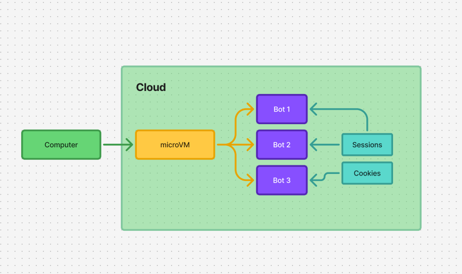

AI
Grok Bot Marketplace—are you guys on there yet?
A quick heads-up on what exactly this Grok Marketplace does

Yeah! Me too! I am also witnessing a transition in the tech field. The emerging massive marketplace -- Grok Bot.
I would like to illustrate How Grok Bot Marketplace works with the following examples:
I run a company that requires back-to-back travel, which makes it challenging to keep up with the volume of management-level emails I receive from clients. Here, I could hire someone to check my email daily and breif me at the end of the day. Instead, I could see if an AI agent could step in and handle this job in practice. This is where Grok comes in —much like its high-profile competitors, it can tackle this problem using its own marketplace.
Simply put, the Grok AI Marketplace offers AI-trained tools or programs that can easily automate taks, jut like the example above.
Flora: Plant care log, PFO bot, Credit Card Max and Chief of Staff are some of the bots listed in the Grok Marketplace.
Why should you use these bots?
Every time you open an AI tool, you start from scratch with a blank screen.
These bots make sense because they are built for specific tasks, for one clear job. There is no need to waste time crafting the perfect prompt every time—it saves so much effort.
Data privacy matters here! By using a bot, you get a copy, run it, and get started right away.
It is easy to try or remove with one-click actions.
Computer in the cloud

Shutting down your computer won’t stop the bot. You can take control of the system whenever you need to, which I think is a nice feature.To wrap things up: whether you're a developer eager to create something new or a business owner looking to cut costs, this platform offers huge potential.